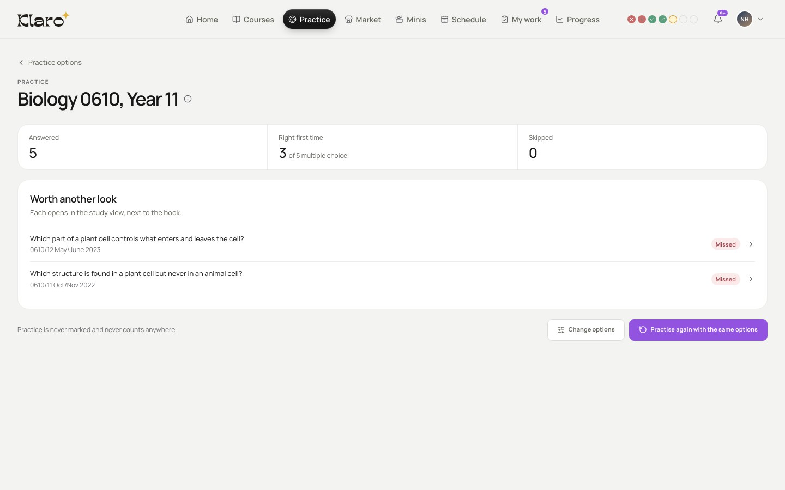

Your weak spots first
Minis lists the units you missed most in past-paper practice, weakest first. Every question you missed also opens where it was explained.
About practice questions
- Klaro keeps track of what you got wrong…
- …and each one opens where it was explained, before the exam finds it.